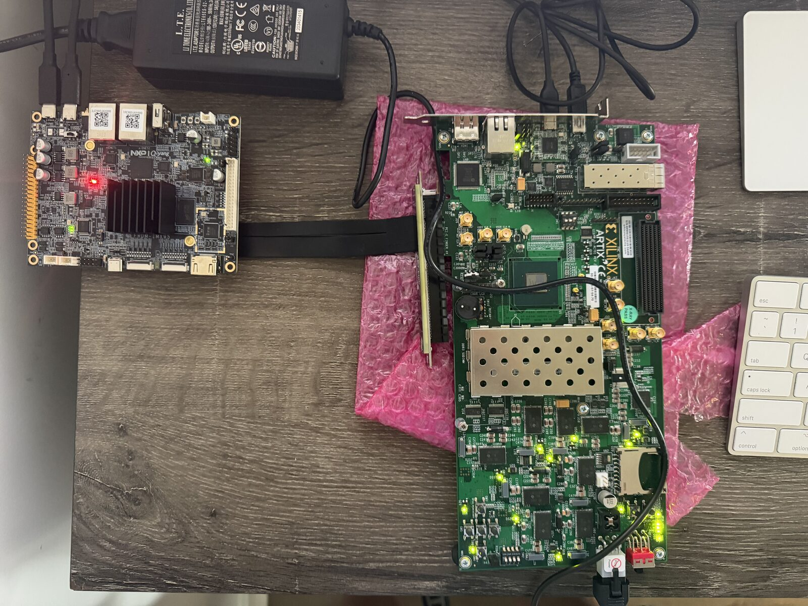
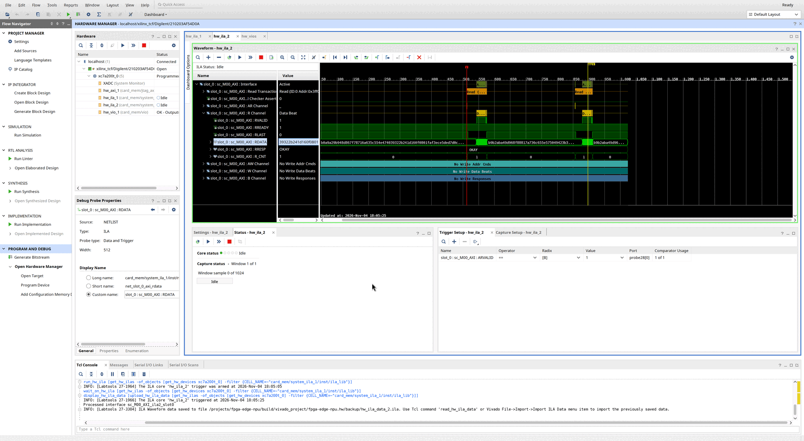

An open accelerator, measured on real hardware
Inside a PCIe AI accelerator
Hailo-8 and NXP's Ara-2 are cards an embedded CPU hands work to over PCIe. This project builds one in the open, on an AMD Artix-7 FPGA driven by an NXP i.MX95, and follows every byte from the CPU through the IOMMU and the PCIe link into the card's memory. Every number on this page was measured on the bench below, or is derived from one that was.

01 · The system
Every part between the CPU and the card's memory
Select a block to see what it does, what it measured, and what went wrong there during bring-up.
02 · Data flow
Four journeys through the system
Pick one and watch it move. The steps below follow the packet; the times are the bench's.
03 · Numbers
Where the time goes, and how fast each path is
Tags say where each number comes from: measured on the bench, derived from measurements, or spec from a standard or datasheet.
From one clock tick to one gigabyte
Log scale: each grid line is ten times the one before.
Measured bandwidth against each path's limit
Bars are measured; the gray track is the limit for that path. The card's own memory is about sixteen times faster than the link that feeds it.
DMA throughput against transfer size
Each transfer pays about 40 µs of fixed cost, so small transfers waste the link. Above about 1 MiB the link itself is the limit.
04 · Debugging on real hardware
Instruments built into the card
The card carries a logic analyzer on each side of its memory interconnect, a virtual control panel, and a JTAG path into DDR3, all reachable from Vivado with no host attached. Bring-up turned up three bugs, one in each layer: the card's registers, the host driver, and a card engine caught before it shipped. Each card below says how it was found.

ARVALID: two read transactions, their 512-bit data beats with OKAY responses, and an AXI protocol checker that counted no violations.05 · Compared
Where weights live decides the design
The two products this project learns from make opposite choices. The card here can play both roles at small scale.
06 · Roadmap